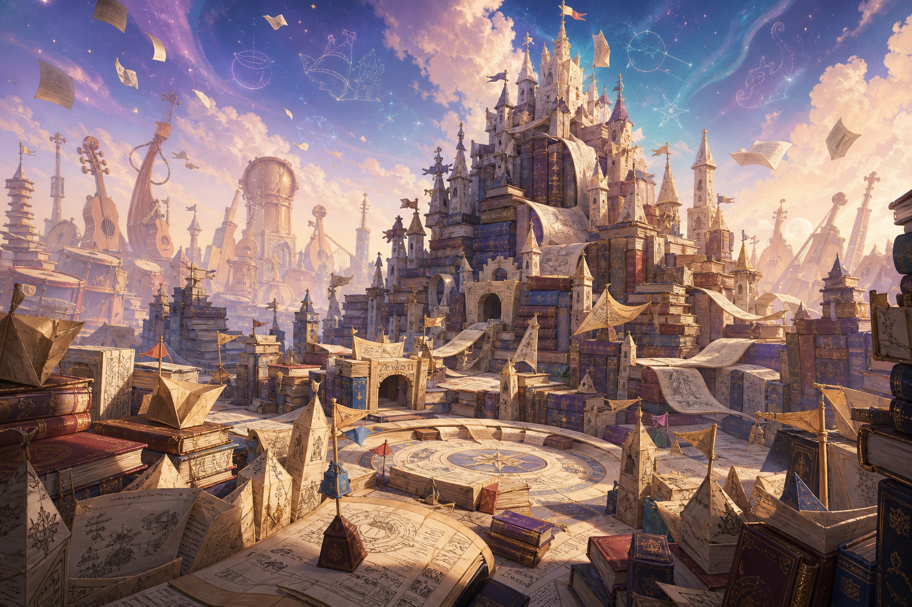

동화 크로스오버
빨간 모자, 신데렐라, 앨리스, 알라딘, 카구야 등 익숙한 원전 캐릭터를 전투 역할과 스킬로 재해석한다.
Unreal Engine Multiplayer Prototype
전 세계의 동화, 설화, 민담 속 인물들이 하나의 책 세계 전장에서 충돌하는 TPS 기반 2 vs 2 팀 PvP 게임.
FieryTale은 동화 캐릭터 크로스오버의 매력을 TPS 조작감과 AOS식 구조물 목표로 풀어내는 소규모 팀 대전 게임이다. 플레이어는 캐릭터를 직접 조준하고 움직이며, 라인을 압박하고, 방어타워를 무너뜨린 뒤 상대 넥서스를 파괴한다.
빨간 모자, 신데렐라, 앨리스, 알라딘, 카구야 등 익숙한 원전 캐릭터를 전투 역할과 스킬로 재해석한다.
초기 전장은 2라인과 팀별 넥서스, 방어타워로 구성된다. 복잡한 성장보다 한 판의 흐름과 목표 이해를 우선한다.
쿼터뷰가 아닌 TPS 시점으로 캐릭터 실루엣, 조준, 거리 조절, 스킬 적중의 체감을 전면에 둔다.
첫 번째 전장은 특정 동화 하나가 아니라 책과 이야기 자체로 이루어진 세계다. 책으로 된 성, 접힌 종이 방벽, 양피지 길, 부유하는 페이지, 원경의 악기 실루엣이 하나의 전장을 만든다.
| 시각 키워드 | 책, 종이, 잉크, 금박, 부유하는 페이지, 악기 실루엣 |
|---|---|
| 분위기 | 몽환적이고 동화적이지만, PvP 전장의 목표물이 명확하게 읽히는 방향 |
| 맵 기준 | TPS 시점에서 라인, 타워, 넥서스의 방향과 실루엣을 쉽게 인식할 수 있어야 한다. |

MVP의 목표는 많은 시스템을 넣는 것이 아니라, 서버 권한으로 한 판이 처음부터 끝까지 돌아가는 얇은 프로토타입을 완성하는 것이다.
| 매치 규모 | 최종 시연 목표는 2 vs 2, 최소 검증은 1 vs 1도 가능해야 한다. |
|---|---|
| 시점 | 캐릭터 뒤쪽 위에서 보는 TPS 시점. 파라곤, 사이퍼즈 계열의 직접 조작감을 기준으로 한다. |
| 전장 | 2라인 압축형 전장. 팀별 방어타워 2개, 넥서스 1개, 스폰 지점을 둔다. |
| 리스폰 | 사망 시 입력과 공격을 막고, 5초 뒤 자기 팀 스폰 지점에서 MaxHealth로 부활한다. |
| 승리 조건 | 상대 팀 방어타워 중 하나 이상을 파괴해 넥서스를 취약화한 뒤, 넥서스를 파괴한다. |
| 제외 범위 | 2주 MVP에서는 미니언, 성장, 아이템, 미니맵, 정교한 매치메이킹, 타워 자동 공격을 제외한다. |
피해, 사망, 리스폰, 구조물 파괴, 넥서스 취약화, 승패 판정은 서버가 확정한다. 4주 필수 목표는 Listen Server 기반 2 vs 2 시연이며, Dedicated Server는 선택 목표다.
공통 BaseCharacter에 AbilitySystemComponent, AttributeSet, 기본 공격, 공격 스킬, 이동 스킬, 궁극기 슬롯을 붙이고, 이후 캐릭터는 데이터와 Ability 조합으로 확장한다.
동화 캐릭터 크로스오버, TPS 시점, 2 vs 2 소규모 PvP, 2라인 전장, 서버 권한 전투, GAS 기반 캐릭터 확장 구조.
GAS 세부 규칙, 2 vs 2 역할군, 초기 테스트 캐릭터 2종, 2라인 블록아웃, 4주 프로토타입 백로그 정리.